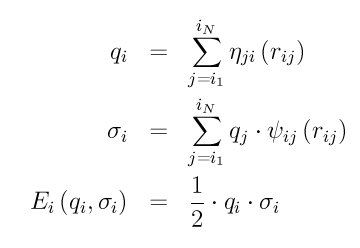

pair_style eim command¶
pair_style eim/omp command¶
Examples¶
pair_style eim
pair_coeff * * Na Cl ../potentials/ffield.eim Na Cl
pair_coeff * * Na Cl ffield.eim Na Na Na Cl
pair_coeff * * Na Cl ../potentials/ffield.eim Cl NULL Na
Description¶
Style eim computes pairwise interactions for ionic compounds using embedded-ion method (EIM) potentials (Zhou). The energy of the system E is given by

The first term is a double pairwise sum over the J neighbors of all I atoms, where phi_ij is a pair potential. The second term sums over the embedding energy E_i of atom I, which is a function of its charge q_i and the electrical potential sigma_i at its location. E_i, q_i, and sigma_i are calculated as
where eta_ji is a pairwise function describing electron flow from atom I to atom J, and psi_ij is another pairwise function. The multi-body nature of the EIM potential is a result of the embedding energy term. A complete list of all the pair functions used in EIM is summarized below

Here E_b, r_e, r_(c,phi), alpha, beta, A_(psi), zeta, r_(s,psi), r_(c,psi), A_(eta), r_(s,eta), r_(c,eta), chi, and pair function type p are parameters, with subscripts ij indicating the two species of atoms in the atomic pair.
Note
Even though the EIM potential is treating atoms as charged ions, you should not use a LAMMPS atom_style that stores a charge on each atom and thus requires you to assign a charge to each atom, e.g. the charge or full atom styles. This is because the EIM potential infers the charge on an atom from the equation above for q_i; you do not assign charges explicitly.
All the EIM parameters are listed in a potential file which is specified by the pair_coeff command. This is an ASCII text file in a format described below. The “ffield.eim” file included in the “potentials” directory of the LAMMPS distribution currently includes nine elements Li, Na, K, Rb, Cs, F, Cl, Br, and I. A system with any combination of these elements can be modeled. This file is parameterized in terms of LAMMPS metal units.
Note that unlike other potentials, cutoffs for EIM potentials are not set in the pair_style or pair_coeff command; they are specified in the EIM potential file itself. Likewise, the EIM potential file lists atomic masses; thus you do not need to use the mass command to specify them.
Only a single pair_coeff command is used with the eim style which specifies an EIM potential file and the element(s) to extract information for. The EIM elements are mapped to LAMMPS atom types by specifying N additional arguments after the filename in the pair_coeff command, where N is the number of LAMMPS atom types:
- Elem1, Elem2, ...
- EIM potential file
- N element names = mapping of EIM elements to atom types
See the pair_coeff doc page for alternate ways to specify the path for the potential file.
As an example like one of those above, suppose you want to model a system with Na and Cl atoms. If your LAMMPS simulation has 4 atoms types and you want the 1st 3 to be Na, and the 4th to be Cl, you would use the following pair_coeff command:
pair_coeff * * Na Cl ffield.eim Na Na Na Cl
The 1st 2 arguments must be * * so as to span all LAMMPS atom types. The filename is the EIM potential file. The Na and Cl arguments (before the file name) are the two elements for which info will be extracted from the potentail file. The first three trailing Na arguments map LAMMPS atom types 1,2,3 to the EIM Na element. The final Cl argument maps LAMMPS atom type 4 to the EIM Cl element.
If a mapping value is specified as NULL, the mapping is not performed. This can be used when an eim potential is used as part of the hybrid pair style. The NULL values are placeholders for atom types that will be used with other potentials.
The ffield.eim file in the potentials directory of the LAMMPS distribution is formated as follows:
Lines starting with # are comments and are ignored by LAMMPS. Lines starting with “global:” include three global values. The first value divides the cations from anions, i.e., any elements with electronegativity above this value are viewed as anions, and any elements with electronegativity below this value are viewed as cations. The second and third values are related to the cutoff function - i.e. the 0.510204, 1.64498, and 0.010204 shown in the above equation can be derived from these values.
Lines starting with “element:” are formatted as follows: name of element, atomic number, atomic mass, electronic negativity, atomic radius (LAMMPS ignores it), ionic radius (LAMMPS ignores it), cohesive energy (LAMMPS ignores it), and q0 (must be 0).
Lines starting with “pair:” are entered as: element 1, element 2, r_(c,phi), r_(c,phi) (redundant for historical reasons), E_b, r_e, alpha, beta, r_(c,eta), A_(eta), r_(s,eta), r_(c,psi), A_(psi), zeta, r_(s,psi), and p.
The lines in the file can be in any order; LAMMPS extracts the info it needs.
Styles with a cuda, gpu, intel, kk, omp, or opt suffix are functionally the same as the corresponding style without the suffix. They have been optimized to run faster, depending on your available hardware, as discussed in Section_accelerate of the manual. The accelerated styles take the same arguments and should produce the same results, except for round-off and precision issues.
These accelerated styles are part of the USER-CUDA, GPU, USER-INTEL, KOKKOS, USER-OMP and OPT packages, respectively. They are only enabled if LAMMPS was built with those packages. See the Making LAMMPS section for more info.
You can specify the accelerated styles explicitly in your input script by including their suffix, or you can use the -suffix command-line switch when you invoke LAMMPS, or you can use the suffix command in your input script.
See Section_accelerate of the manual for more instructions on how to use the accelerated styles effectively.
Restrictions¶
This style is part of the MANYBODY package. It is only enabled if LAMMPS was built with that package (which it is by default).